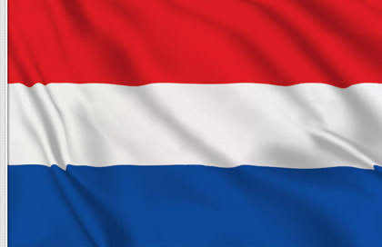

Los Países Bajos son un país del noroeste europeo conocido por su paisaje plano de canales, campos de tulipanes, molinos y ciclovías. Ámsterdam, la capital, alberga el museo Rijksmuseum, el Museo van Gogh y la casa donde la joven judía Anna Frank se escondió y escribió su diario durante la Segunda Guerra Mundial. Las mansiones junto a los canales y un tesoro de obras de artistas, como Rembrandt y Vermeer, permanecen desde la "Edad de Oro" de la ciudad en el siglo XVII.

CARACTERISTICAS
Capital: Ámsterdam, conocida por sus canales y museos.
Idioma: Neerlandés (holandés), aunque muchos hablan inglés y alemán.
Moneda: Euro (€).
Gobierno: Monarquía constitucional con un sistema parlamentario.
Geografía: Gran parte del país está por debajo del nivel del mar, con extensos diques y terrenos ganados al mar.
Clima: Templado con inviernos suaves y veranos frescos.
Economía: Fuerte en comercio internacional, agricultura, tecnología y energías renovables.
Cultura: Famosa por su arte (con artistas como Rembrandt y Van Gogh) y sus festivales, como el Reina's Day.
Transporte: Gran red de bicicletas y sistemas de transporte público eficientes.
Bienestar: Alta calidad de vida, con un excelente sistema de salud y educación.